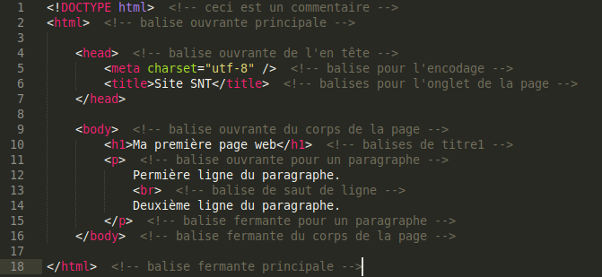

Le langage HTML (HyperText Markup Language)
a été crée en 1990 et sert a rédiger des pages Web.
Ce language est structuré avec des balises qui sont reconnaissables par la notation suivante :
<"balise ouvrante"> ... </"balise fermante"> .
Voici un exemple de code HTML minimal.

Dans l'exemple ci-dessus les balises sont en rouges et sont encadrées par les symboles
<...> .
Définition (Balises ouvrantes) :
Les balises ouvrantes sont reconnaissables car elles n'ont pas le symbole "slash"
(<...>).
Exemple : <h1> est la balise ouvrante pour les titres importants.
Définition (Balises fermantes) :
les balises fermantes sont reconnaissables car elles ont le symbole "slash"
(</...>).
Exemple : </h1> est la balise fermante pour les titres importants.
Remarque :
Certaines balises comme la balise <br> qui permet d'obtenir un retour à la ligne ne nécessite qu'une balise ouvrante et on n'a pas de balise fermante à rédiger, car il n'y a rien à mettre entre les deux.
les commentaires sont facultatifs et sont en gris dans l'exemple ci-dessus. Ils sont encadrés par les symboles : <!-- ... --> .